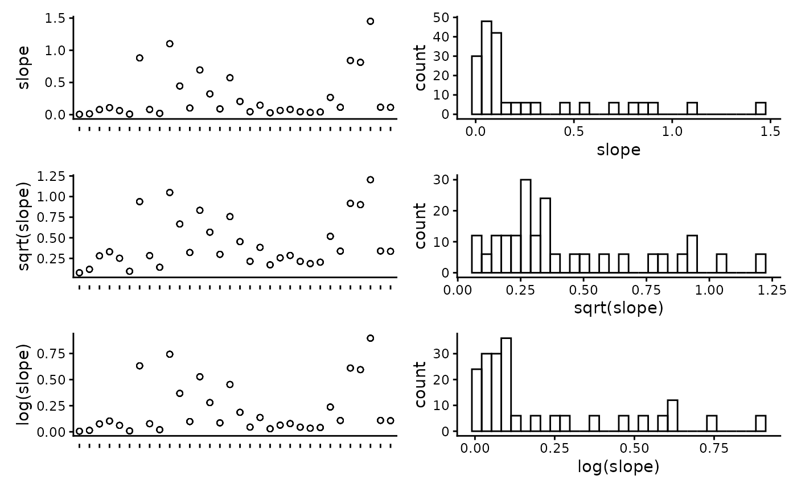
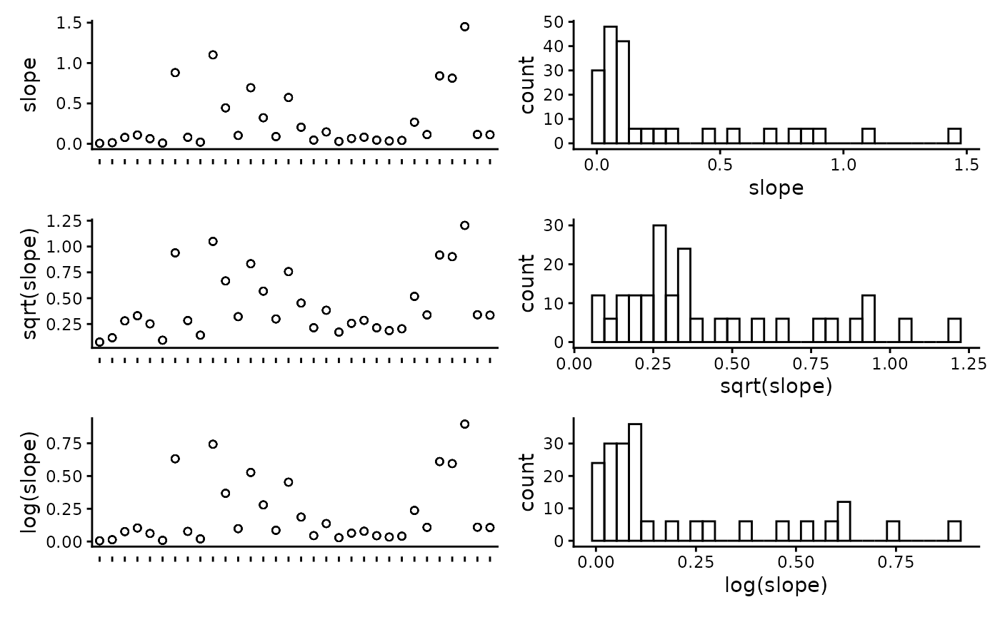

Generate spatial predictions of habitat using FSSgam
Claude Spencer & Brooke Gibbons
2023-11-13
habitat-modelling.RmdThis script takes the checked habitat data from the previous workflow steps, visualises the data and exports it into a format suitable for modelling. The exploratory visualisation of the data allows for trends and patterns in the raw data to be investigated.
R setup
Load libraries.
library('remotes')
options(timeout=9999999)
# remotes::install_github("GlobalArchiveManual/CheckEM")
library(CheckEM)
library(tidyverse)
library(mgcv)
library(devtools)
library(FSSgam)
library(here)
library(ggplot2)
library(ggnewscale)
library(viridis)
library(terra)
library(sf)
library(patchwork)Set the study name.
name <- 'example-bruv-workflow'Load data
Load the habitat point annotation data.
dat <- readRDS(here::here(paste0("r-workflows/data/tidy/",
name, "_tidy-habitat.rds"))) %>%
glimpse()## Rows: 192
## Columns: 27
## $ campaignid <chr> "2023-03_SwC_stereo-BRUVs", "2023-03_SwC_s…
## $ sample <chr> "35", "35", "35", "35", "35", "35", "5", "…
## $ date_time <chr> "14/03/2023 23:36", "14/03/2023 23:36", "1…
## $ location <chr> NA, NA, NA, NA, NA, NA, NA, NA, NA, NA, NA…
## $ site <chr> NA, NA, NA, NA, NA, NA, NA, NA, NA, NA, NA…
## $ depth_m <chr> "39.6", "39.6", "39.6", "39.6", "39.6", "3…
## $ successful_count <chr> "Yes", "Yes", "Yes", "Yes", "Yes", "Yes", …
## $ successful_length <chr> "Yes", "Yes", "Yes", "Yes", "Yes", "Yes", …
## $ successful_habitat_forward <chr> "Yes", "Yes", "Yes", "Yes", "Yes", "Yes", …
## $ successful_habitat_backward <chr> "Yes", "Yes", "Yes", "Yes", "Yes", "Yes", …
## $ x <dbl> 114.9236, 114.9236, 114.9236, 114.9236, 11…
## $ y <dbl> -34.13155, -34.13155, -34.13155, -34.13155…
## $ longitude_dd <dbl> 114.9236, 114.9236, 114.9236, 114.9236, 11…
## $ latitude_dd <dbl> -34.13155, -34.13155, -34.13155, -34.13155…
## $ id <dbl> 63, 63, 63, 63, 63, 63, 64, 64, 64, 64, 64…
## $ mbdepth <dbl> -34.97151, -34.97151, -34.97151, -34.97151…
## $ slope <dbl> 0.1468434, 0.1468434, 0.1468434, 0.1468434…
## $ aspect <dbl> 209.89577, 209.89577, 209.89577, 209.89577…
## $ tpi <dbl> 0.4215345, 0.4215345, 0.4215345, 0.4215345…
## $ tri <dbl> 0.7555733, 0.7555733, 0.7555733, 0.7555733…
## $ roughness <dbl> 2.211193, 2.211193, 2.211193, 2.211193, 2.…
## $ detrended <dbl> -5.663174, -5.663174, -5.663174, -5.663174…
## $ total_points_annotated <dbl> 37, 37, 37, 37, 37, 37, 36, 36, 36, 36, 36…
## $ habitat <chr> "Macroalgae", "Seagrasses", "Sessile inver…
## $ count <dbl> 24, 1, 3, 1, 8, 29, 30, 6, 0, 0, 0, 36, 21…
## $ mean_relief <dbl> 3.034483, 3.034483, 3.034483, 3.034483, 3.…
## $ sd_relief <dbl> 1.1174831, 1.1174831, 1.1174831, 1.1174831…Set up data for modelling
Set the predictor variables.
names(dat)## [1] "campaignid" "sample"
## [3] "date_time" "location"
## [5] "site" "depth_m"
## [7] "successful_count" "successful_length"
## [9] "successful_habitat_forward" "successful_habitat_backward"
## [11] "x" "y"
## [13] "longitude_dd" "latitude_dd"
## [15] "id" "mbdepth"
## [17] "slope" "aspect"
## [19] "tpi" "tri"
## [21] "roughness" "detrended"
## [23] "total_points_annotated" "habitat"
## [25] "count" "mean_relief"
## [27] "sd_relief"
pred.vars <- c("mbdepth","roughness", "detrended",
"slope", "tpi", "aspect", "tri")Check for correlation of predictor variables and remove anything highly correlated (>0.95).
## mbdepth roughness detrended slope tpi aspect tri
## mbdepth 1.00 -0.66 -0.89 -0.65 0.03 -0.32 -0.59
## roughness -0.66 1.00 0.48 0.99 0.29 0.06 0.99
## detrended -0.89 0.48 1.00 0.47 0.00 0.39 0.42
## slope -0.65 0.99 0.47 1.00 0.29 0.06 0.99
## tpi 0.03 0.29 0.00 0.29 1.00 -0.02 0.35
## aspect -0.32 0.06 0.39 0.06 -0.02 1.00 0.04
## tri -0.59 0.99 0.42 0.99 0.35 0.04 1.00Plot the individual predictors to assess if any transformations are necessary. We suggest to only use transformations when absolutely necessary. In the example dataset, most of the response variables have relatively balanced distributions, and therefor we have left them untransformed.
plot_transformations(pred.vars = pred.vars, dat = dat)

 



Reset the predictor variables to remove any highly correlated variables and include any transformed variables.
pred.vars <- c("depth_m","roughness", "detrended",
"tpi", "aspect", "tri")Check to make sure response variables have less than 80% zeroes. Full-subset GAM modelling will produce unreliable results if your data is too zero inflated.
resp.vars.all = unique(as.character(dat$habitat))
resp.vars = character()
for(i in 1:length(resp.vars.all)){
temp.dat = dat[which(dat$habitat == resp.vars.all[i]),]
if(length(which(temp.dat$habitat == 0)) / nrow(temp.dat) < 0.8){
resp.vars = c(resp.vars, resp.vars.all[i])}
}
resp.vars## [1] "Macroalgae" "Seagrasses" "Sessile invertebrates"
## [4] "Consolidated (hard)" "Unconsolidated (soft)" "reef"Add the directory to save model outputs, and set up the R environment for model selection.
Run the full subset model selection process
This loop has been adapted from @beckyfisher/FSSgam, and examples and documentation is available on GitHub and in Fisher, R, Wilson, SK, Sin, TM, Lee, AC, Langlois, TJ. A simple function for full-subsets multiple regression in ecology with R. Ecol Evol. 2018; 8: 6104–6113. https://doi.org/10.1002/ece3.4134
for(i in 1:length(resp.vars)){
print(resp.vars[i])
use.dat <- dat[dat$habitat == resp.vars[i],]
use.dat <- as.data.frame(use.dat)
Model1 <- gam(cbind(count, (total_points_annotated - count)) ~
s(mbdepth, bs = 'cr'),
family = binomial("logit"), data = use.dat)
model.set <- generate.model.set(use.dat = use.dat,
test.fit = Model1,
pred.vars.cont = pred.vars,
cyclic.vars = c("aspect"),
k = 5,
cov.cutoff = 0.7
)
out.list <- fit.model.set(model.set,
max.models = 600,
parallel = T)
names(out.list)
out.list$failed.models
mod.table <- out.list$mod.data.out
mod.table <- mod.table[order(mod.table$AICc), ]
mod.table$cumsum.wi <- cumsum(mod.table$wi.AICc)
out.i <- mod.table[which(mod.table$delta.AICc <= 2), ]
out.all <- c(out.all, list(out.i))
var.imp <- c(var.imp, list(out.list$variable.importance$aic$variable.weights.raw))
for(m in 1:nrow(out.i)){
best.model.name <- as.character(out.i$modname[m])
png(file = here::here(paste(outdir, m, resp.vars[i], "mod_fits.png", sep = "")))
if(best.model.name != "null"){
par(mfrow = c(3, 1), mar = c(9, 4, 3, 1))
best.model = out.list$success.models[[best.model.name]]
plot(best.model, all.terms = T, pages = 1, residuals = T, pch = 16)
mtext(side = 2, text = resp.vars[i], outer = F)}
dev.off()
}
}Save the model fits and importance scores.
names(out.all) <- resp.vars
names(var.imp) <- resp.vars
all.mod.fits <- list_rbind(out.all, names_to = "response")
all.var.imp <- do.call("rbind",var.imp)
write.csv(all.mod.fits[ , -2], file = here::here(paste0(outdir, name, "_all.mod.fits.csv")))
write.csv(all.var.imp, file = here::here(paste0(outdir, name, "_all.var.imp.csv")))Spatially predict the top model from the model selection process
Transform the habitat data into wide format for easy prediction.
widedat <- dat %>%
pivot_wider(values_from = "count", names_from = "habitat", values_fill = 0) %>%
clean_names() %>%
glimpse()## Rows: 32
## Columns: 31
## $ campaignid <chr> "2023-03_SwC_stereo-BRUVs", "2023-03_SwC_s…
## $ sample <chr> "35", "5", "26", "23", "29", "4", "32", "3…
## $ date_time <chr> "14/03/2023 23:36", "14/03/2023 23:49", "1…
## $ location <chr> NA, NA, NA, NA, NA, NA, NA, NA, NA, NA, NA…
## $ site <chr> NA, NA, NA, NA, NA, NA, NA, NA, NA, NA, NA…
## $ depth_m <chr> "39.6", "42.7", "36", "41", "42.6", "45", …
## $ successful_count <chr> "Yes", "Yes", "Yes", "Yes", "Yes", "Yes", …
## $ successful_length <chr> "Yes", "Yes", "Yes", "Yes", "Yes", "Yes", …
## $ successful_habitat_forward <chr> "Yes", "Yes", "Yes", "Yes", "Yes", "Yes", …
## $ successful_habitat_backward <chr> "Yes", "Yes", "Yes", "Yes", "Yes", "Yes", …
## $ x <dbl> 114.9236, 114.9292, 114.9284, 114.9190, 11…
## $ y <dbl> -34.13155, -34.12953, -34.12729, -34.12832…
## $ longitude_dd <dbl> 114.9236, 114.9292, 114.9284, 114.9190, 11…
## $ latitude_dd <dbl> -34.13155, -34.12953, -34.12729, -34.12832…
## $ id <dbl> 63, 64, 65, 66, 67, 68, 69, 70, 71, 72, 73…
## $ mbdepth <dbl> -34.97151, -36.35807, -40.68553, -38.25594…
## $ slope <dbl> 0.146843375, 0.812689749, 0.694289634, 0.4…
## $ aspect <dbl> 209.89577, 62.41434, 40.87387, 294.10675, …
## $ tpi <dbl> 0.42153454, 2.39535522, -0.67607403, 0.476…
## $ tri <dbl> 0.75557327, 3.29823494, 2.39221191, 1.8367…
## $ roughness <dbl> 2.21119308, 8.36493301, 8.36493301, 5.3012…
## $ detrended <dbl> -5.6631737, -7.0394716, -11.2637815, -8.69…
## $ total_points_annotated <dbl> 37, 36, 39, 32, 36, 22, 25, 14, 24, 35, 33…
## $ mean_relief <dbl> 3.034483, 3.900000, 4.000000, 3.555556, 4.…
## $ sd_relief <dbl> 1.1174831, 0.4472136, 0.0000000, 0.8555853…
## $ macroalgae <dbl> 24, 30, 21, 14, 8, 14, 7, 1, 12, 26, 29, 2…
## $ seagrasses <dbl> 1, 6, 18, 11, 28, 6, 0, 1, 1, 9, 2, 4, 14,…
## $ sessile_invertebrates <dbl> 3, 0, 0, 7, 0, 2, 2, 0, 0, 0, 2, 0, 1, 0, …
## $ consolidated_hard_ <dbl> 1, 0, 0, 0, 0, 0, 3, 0, 0, 0, 0, 0, 0, 0, …
## $ unconsolidated_soft_ <dbl> 8, 0, 0, 0, 0, 0, 13, 12, 11, 0, 0, 0, 0, …
## $ reef <dbl> 29, 36, 39, 32, 36, 22, 12, 2, 13, 35, 33,…Load the raster of bathymetry data and derivatives.
preds <- rast(here::here(paste0("r-workflows/data/spatial/rasters/",
name, "_bathymetry_derivatives.rds")))
plot(preds)Transform the raster to a dataframe to predict onto.
preddf <- as.data.frame(preds, xy = TRUE, na.rm = TRUE) %>%
dplyr::mutate(depth = abs(mbdepth)) %>%
clean_names() %>%
glimpse()## Rows: 73,350
## Columns: 10
## $ x <dbl> 115.1714, 115.1739, 115.1764, 115.1789, 115.1814, 115.1839, …
## $ y <dbl> -33.60361, -33.60361, -33.60361, -33.60361, -33.60361, -33.6…
## $ mbdepth <dbl> -14.83014, -13.89184, -14.18757, -14.48647, -14.47323, -14.3…
## $ slope <dbl> 0.24350203, 0.19746646, 0.17799167, 0.18316828, 0.22091857, …
## $ aspect <dbl> 339.995240, 341.597571, 21.180346, 12.600024, 356.337121, 35…
## $ tpi <dbl> -3.721524e-01, 5.277313e-01, 1.502453e-01, -1.123428e-03, 9.…
## $ tri <dbl> 0.9656481, 0.8277034, 0.6934198, 0.6945946, 0.8081013, 0.902…
## $ roughness <dbl> 2.807414, 2.421717, 2.196986, 2.156502, 2.581898, 2.606502, …
## $ detrended <dbl> -2.871674, -2.161609, -2.683798, -3.207528, -3.417629, -3.56…
## $ depth <dbl> 14.83014, 13.89184, 14.18757, 14.48647, 14.47323, 14.39490, …